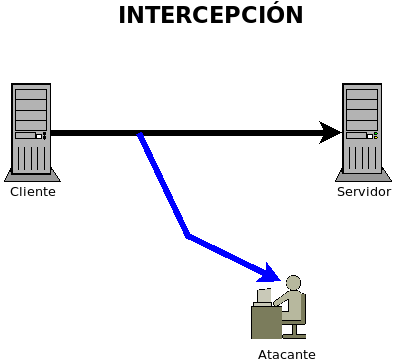
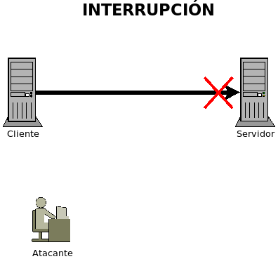
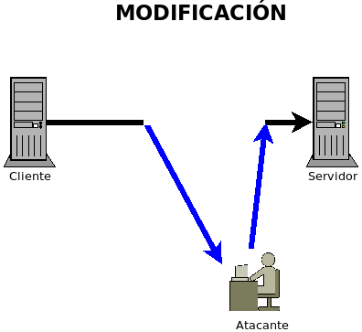
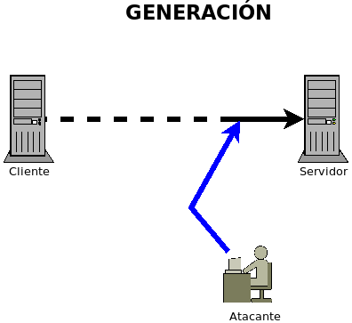

8.9.1. Tipos¶
Las redes informáticas están sometidas a innumerables ataques de muy distinta naturaleza que podemos clasificar del siguiente modo:
- Pasivos
Son aquellos que acceden a la información trasmitida sin alterarla en absoluto. Dentro de los ataques pasivos se encuentran los ataques:
De intercepción: Son ataques que extraen información de la comunicación sin entorpecerla ni, por tanto, causar daño directo. La monitorización de tráfico es un típico ataque de intercepción.

- Activos
Son aquellos que producen cambios en la información transmitida. Pueden distinguirse, dentro de ellos, los siguientes tipos de ataques:
De interrupción: Son aquellos que provocan la suspensión de un servicio. Suele denominárseles ataques DoS (ataques de denegación de servicio). Estos ataques muy comúmente no parten de una misma máquina, sino de un enjambre de ellas por lo que es muy común el uso del termino DDoS (DoS distribuido). Se profundizará más adelante en ellos.
De modificación: Son ataques en que el atacante se sitúa entre cliente y servidor con el propósito de alterar los mensajes que se envían entre ellos a fin de obtener un beneficio. Trataremos algunas técnicas en un apartado posterior.
De generación: Consiste en generar mensajes fraudulentos desde la máquina atacante que la víctima cree que proceden de otra con la que pretende comunicarse. Un típico ataque de generación es el envenenamiento ARP que estudiaremos más adelante.

Por otro lado todos aquellos ataques en que el atacante logra situarse en mitad de la conversación (o sea, cualquier ataque de intercepción o de modificación o uno de generación cuyo objetivo sea provocar que el atacante acabe atrayendo hacia sí la conversación) reciben el nombre de ataques de intermediario o ataque man-in-the-middle. (muy comúmente nombrado por sus siglas MitM).